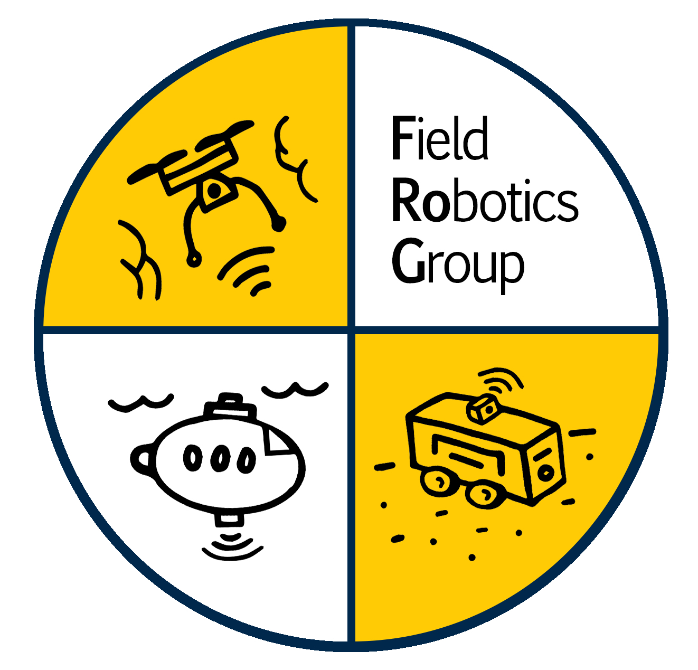

Random Art¿My research has often produced weird art as a wrong byproduct. While this was annoying during the research process, it now looks cool enough to show on my website!
1 / 6
|
Sacchin Sundar I am a Master's student in Robotics at the University of Michigan and a member of the Field Robotics Group (FRoG), advised by Prof. Katie Skinner. My research focuses on learning representations that support perception, planning, and control, with an emphasis on neural scene representations as substrates for action. I am particularly interested in how physically grounded and structured representations can bridge low-level sensory inputs with high-level decision-making in complex environments. My prior work spans dense correspondence learning, neural implicit 3D reconstruction, and differentiable sensing models developed in challenging domains, which inform my current focus on generalizable perception-planning systems. I also serve as a Graduate Student Instructor for ROB 330 (SLAM & Navigation) and am deeply invested in teaching, mentorship, and outreach. |
PrePrintPreprints and papers currently under review or in preparation. |
|
MARVO: Marine-Adaptive Radiance-aware Visual Odometry
Sacchin Sundar*, Atman Kikani*, Aaliya Alam, Sumukh Shrote, A. Nayeemulla Khan, A. Shahina (*equal contribution) Submitted to IEEE/CVF Conference on Computer Vision and Pattern Recognition 2026 arXiv Preprint MARVO is a physics-aware visual inertial odometry framework for underwater robots that combines a transformer-based feature matcher with a Physics Aware Radiance Adapter to compensate wavelength dependent attenuation, and fuses these corrected visual factors with IMU and barometric depth in a GTSAM factor graph. It further applies a reinforcement learning based pose graph optimizer on SE(2) to refine global trajectories, improving robustness in turbid, visually degraded underwater environments. |
Selected ProjectsA collection of projects I've worked on, ranging from reinforcement learning to neural scene representations. |
|
NSGR: Neuro Symbolic Grounding in Gaussian Representations
Sacchin Sundar, Anandi Arora, Michael Tanner Course Project, 2025 |
|

|
BAGS: Bundle-Adjusting Gaussian Splatting for Object-Centric 3D Reconstruction
Sacchin Sundar, Ruben Fonseca Course Project, 2025 PDF Report |
|
|
Reinforcement Learning Agent playing Games
RL Based agent to play Pokemon Red Personal Project GitHub Repository |

|
High Density-Dynamic Objects Planning (HiDDOP) with Attention-based Deep Reinforcement Learning
Sacchin Sundar Research Project GitHub Repository |

Blog |
Visit my blog on Tumblr →
Thoughts on work, life, and everything in between. |
|

|